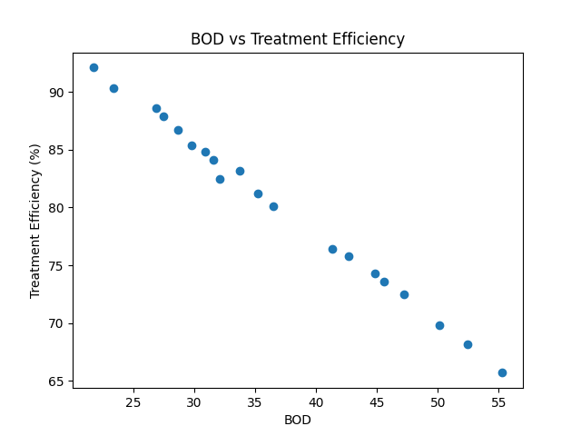

Enter wastewater quality parameters below to predict the treatment efficiency using the trained Linear Regression model.
Loading...
Loading...
Loading...
Loading...
Visualization of wastewater treatment efficiency for previous predictions.
Previous wastewater treatment efficiency predictions stored in the MySQL database.
| ID | pH | Turbidity | Temperature | BOD | COD | TSS | Dissolved Oxygen | Treatment Efficiency | Prediction Time |
|---|
AI + Data Science + Web Development Project
The Waste Water Management System is a data-driven project designed to analyze wastewater-related data and provide useful insights for wastewater management.
The project combines Data Science, Artificial Intelligence, Machine Learning, databases and Web Development.
Wastewater Dataset
↓
Data Cleaning
↓
Exploratory Data Analysis
↓
Data Visualization
↓
Machine Learning Model
↓
Prediction and Analysis
↓
Web Presentation
Python and Pandas will be used to clean and analyze wastewater data.
Data visualization will be used to identify trends, relationships and patterns in the dataset.

Machine learning techniques will be applied to wastewater-related data to develop a predictive model.
The model will be evaluated using appropriate performance metrics.
MySQL can be used to store wastewater records, measurements and analysis-related information.
A Linear Regression model was trained to predict wastewater treatment efficiency using water quality parameters.
The model achieved an R² score of 0.989 on the test dataset. Since the current dataset contains only 20 synthetic/sample records, these results are intended for project demonstration and learning.
Three regression models were evaluated using the same wastewater dataset and the same train-test split.
| Model | MAE | R² Score |
|---|---|---|
| Linear Regression | 0.359 | 0.989 |
| Decision Tree Regression | 1.525 | 0.834 |
| Random Forest Regression | 0.905 | 0.947 |
Evaluation Note: The results are based on a small dataset containing 20 synthetic/sample records and a test set of 4 records. Therefore, these metrics are intended for project demonstration and learning rather than real-world wastewater treatment validation.
The complete source code will be available on GitHub.
View Project on GitHub